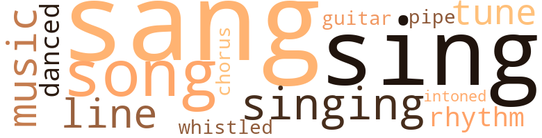
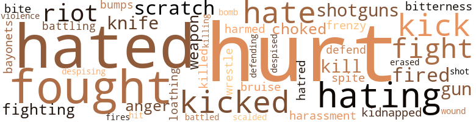
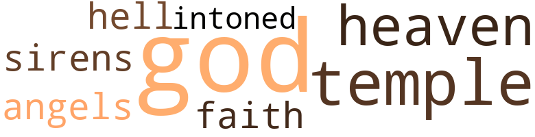

Eagle in the Air, by Robinson, Rose (1973)
50 music-related terms matched in this text.
Most frequent terms in this topic: sang (9); sing (6); singing (5); song (5); music (4)
chorus.n.01
Definition: any utterance produced simultaneously by a group
| word | sentence |
|---|---|
| chorus | On the second chorus the two in front groaned along with the record . |
dance.v.03
Definition: skip, leap, or move up and down or sideways
| word | sentence |
|---|---|
| danced | For most of the night they danced or talked with each other . |
| danced | Jean danced around and cheered . |
guitar.n.01
Definition: a stringed instrument usually having six strings; played by strumming or plucking
| word | sentence |
|---|---|
| guitar | He had rhythm and a guitar . |
music.n.01
Definition: an artistic form of auditory communication incorporating instrumental or vocal tones in a structured and continuous manner
| word | sentence |
|---|---|
| music | Want t ' hear some music ? |
| music | The car made music from that time until he came back hold - ing some bills and three topless bottles . |
| music | Fascinated , Jean watched them both hauling the tune between them , their necks exerting unmusical music , their upper lips not even trying , rhythm volleying between their gazes , face to face . |
| music | While they pulled up the hill , at Johnny 's request she turned on the radio , bringing in music . |
pipe.n.04
Definition: a tubular wind instrument
| word | sentence |
|---|---|
| pipe | And a water pipe with a spigot on top rose up a good bit right of center . |
rhythm.n.04
Definition: the arrangement of spoken words alternating stressed and unstressed elements
| word | sentence |
|---|---|
| rhythm | He had rhythm and a guitar . |
| rhythm | Fascinated , Jean watched them both hauling the tune between them , their necks exerting unmusical music , their upper lips not even trying , rhythm volleying between their gazes , face to face . |
sing.v.02
Definition: produce tones with the voice
| word | sentence |
|---|---|
| sing | " Why do n't you sing , Freeman ? |
| sing | " Ca n't sing , I told you . " |
| Sing | " ' Michael , row - ' " " Sing something else . " |
| sang | Feeling giddy , she galumphed and sang , " Long ride , fancy hotel , Little America hah hah hah . " |
| sang | " Yep , " he said , then sang , " On the banks a the Wabash ferrrr uhwayyyyy . " |
| sing | He could n't sing . |
| sang | " Shore c 'n sang . " |
| sang | " Shore c 'n sang . " |
| sang | Yew sang ? " |
| sang | " Y ' c 'n sang real nice , " he told her . |
| sing | " - not enough student representation , unfit food in cafeterias , no recreation for ghetto children - " " Let 's sing something . " |
| sang | " Johnny , let 's sang somethin' , " Kid suggested , sitting three yards away from the man on the other side of the fire . |
| sang | " Whatcha want t ' sang ? " the other asked . |
| sing | " Hey , everybody , let 's sing . " |
| sang | One used t ' sang ' at song ? " |
| sing | I ca n't sing . " |
| Sing | " Sing anybody . . . You 'll feel better . " |
singing.n.01
Definition: the act of singing vocal music
| word | sentence |
|---|---|
| singing | " ' Freedom 's waters - ' " " Hey , stop singing for a while . |
| singing | They were singing . |
| singing | Feeling self-conscious singing alone , she stopped . |
| singing | The singing was peppier . |
| singing | Until they were n't singing anymore . |
song.n.01
Definition: a short musical composition with words
| word | sentence |
|---|---|
| song | The one the song 's about ? " |
| songs | They roamed , listening to more songs and news . |
| song | " R'member ' at song he 's all time a-sangin ' ? " |
| song | " Guess we c 'n go on ar way , " Johnny grunted clearing the ardor of song from his throat . |
| song | The song went on haunting the darkening hollow in plaintive southern Indiana style . |
| songs | They moaned other songs . |
| song | One used t ' sang ' at song ? " |
| songs | And several songs later , they were in Boise . |
tone.v.01
Definition: utter monotonously and repetitively and rhythmically
| word | sentence |
|---|---|
| intoned | " Go with y ' t ' protect y ' , " he intoned and smiled a little . |
tune.n.01
Definition: a succession of notes forming a distinctive sequence
| word | sentence |
|---|---|
| line | " Good grief , " Jean said out loud , " no line , no feeling - no moving , no talking , no laughing , red light . " |
| tune | After a while there was one , a pop tune changed to country style . |
| line | The car followed a white line for miles to a cool semiprotected place , quitting the struggle long enough for Johnny to put his head back and concentrate on easier things than navigating . |
| tune | Fascinated , Jean watched them both hauling the tune between them , their necks exerting unmusical music , their upper lips not even trying , rhythm volleying between their gazes , face to face . |
| line | " Go wher y ' c 'n an ' leave yer own traces , " Johnny went along alone for a line . |
| tune | Jean struggled along , trying the tune and at the same time hooking meat to her own wand . |
| lines | Leaving her bag with them , she wandered off to one of the long lines facing small windows that framed men 's faces . |
whistle.v.01
Definition: make whistling sounds
| word | sentence |
|---|---|
| whistled | An engine whistled , snarled out of a building , and rolled on . |
99 violence-related terms matched in this text.
Most frequent terms in this topic: hurt (14); hated (7); fought (5); hating (5); fight (4)
abhor.v.01
Definition: find repugnant
| word | sentence |
|---|---|
| loathing | She clawed his arm and flung her legs , loathing the feel of him pressed against her back . |
abrasion.n.01
Definition: an abraded area where the skin is torn or worn off
| word | sentence |
|---|---|
| scratch | It was only a scratch . |
| scratch | " From scratch ? " |
anger.n.01
Definition: a strong emotion; a feeling that is oriented toward some real or supposed grievance
| word | sentence |
|---|---|
| anger | He told her he 'd been there since five that morning , showing anger under his thick brows and full mous - tache , and put his arm around her erotic slenderness and steered her out to his late-model black sedan . |
| Anger | Anger scalded him , looking back . |
battle.v.01
Definition: battle or contend against in or as if in a battle
| word | sentence |
|---|---|
| battling | In a little while she was chugging west again in a truck that was lugging a load , and battling hills , and that , doing its best , did n't hurry . |
| battled | And they all battled gnats and ate . |
bayonet.n.01
Definition: a knife that can be fixed to the end of a rifle and used as a weapon
| word | sentence |
|---|---|
| bayonets | " They 're pouring out and attaching bayonets . " |
blister.v.02
Definition: subject to harsh criticism
| word | sentence |
|---|---|
| scalded | Anger scalded him , looking back . |
bombard.v.02
Definition: throw bombs at or attack with bombs
| word | sentence |
|---|---|
| bomb | They 're gon na bomb us , that 's what . |
bruise.n.01
Definition: an injury that doesn't break the skin but results in some discoloration
| word | sentence |
|---|---|
| bruise | Jean Pierce had a bruise on her leg . |
bump.n.01
Definition: a lump on the body caused by a blow
| word | sentence |
|---|---|
| bumps | The two cars jogged along together riding bumps and turns . |
contemn.v.01
Definition: look down on with disdain
| word | sentence |
|---|---|
| despising | Jean , stiffened , despising the man , knowing she could n't do anything about it . |
| despised | They ganged up on you , sneering you down to their size , and then despised you for shrinking . |
craze.n.02
Definition: state of violent mental agitation
| word | sentence |
|---|---|
| frenzy | A frenzy was coming and both Jean and Bernie knew it . |
erase.v.01
Definition: remove from memory or existence
| word | sentence |
|---|---|
| erased | He engineered his mouth open , scrawled disorder between his eyes , erased it , and saw the others . |
fight.n.05
Definition: a boxing or wrestling match
| word | sentence |
|---|---|
| fight | Had t ' fight m ' way ever since ah 's way younger 'n ' at boy ther . |
| fight | Only hope ah do n't have t ' fight now . |
| fight | " Ai n't aimin ' t ' fight no one , " Johnny explained . |
fight.v.02
Definition: fight against or resist strongly
| word | sentence |
|---|---|
| fought | He fought with a foot - one blow - and shattered wood along the hinges . |
| fighting | Stiff and sore from fighting all night she creaked across the yellow dust to the truck stop . |
| Defend | Defend himself he would . |
| fight | " You ai n't goin ' to fight my boy , " the man yelled . |
| fighting | Johnny swallowed , fighting awful pain . |
| fought | Jean fought her own temper . |
| fought | He fought looking bitter . |
| fought | " Pretty smart , " Jean said , and put the clothes in , several pieces at a time , and fought out the dirt . |
| defending | He was complex and believed in defending himself in ways learned on the corner where he grew up in Chicago . |
| fought | In bed he fought her into paralysis , proud to have her and desperate , and afterward , guilty and drained . |
gag.v.06
Definition: cause to retch or choke
| word | sentence |
|---|---|
| choked | He had dull little eyes and truck pallor and was medium tall and slender , the kind of man who never choked his feelings . |
| choked | The boy was up on his knees , his thin neck choked in a vein mesh , his eyes stretching pleading . |
gun.n.01
Definition: a weapon that discharges a missile at high velocity (especially from a metal tube or barrel)
| word | sentence |
|---|---|
| gun | On his hip was a gun in a belt . |
| gun | The big lawman powered a gray shirt and trousers set off by a black leather belt and holder with a gun in it . |
harassment.n.01
Definition: a feeling of intense annoyance caused by being tormented
| word | sentence |
|---|---|
| harassment | She crushed the harassment and , frightened , went into the building again . |
harm.v.01
Definition: cause or do harm to
| word | sentence |
|---|---|
| harmed | Says they 'll give us fifteen minutes to clear out and release Dr. Bauer un - harmed , and they wo n't use force if we say the word now . " |
hate.n.01
Definition: the emotion of intense dislike; a feeling of dislike so strong that it demands action
| word | sentence |
|---|---|
| hatred | But anyhow , it helped her keep the hatred out of her pose , and kept her bitterness from showing . |
| hate | Jean put her hate away . |
hate.v.01
Definition: dislike intensely; feel antipathy or aversion towards
| word | sentence |
|---|---|
| hating | He should have understood , she thought , hating the manager and everybody who looked like him . |
| hate | " Well , now I hate them . " |
| hated | Chris thought she hated her sister , and it was the same as if she did . |
| hated | And how much she hated her . |
| hated | But anyhow Jean hated her . |
| hated | I hated what happened , " Jean sent forward . |
| hating | Like everyone else , she stank and hurt , hating the police , the chan - cellor , the mayor . |
| hated | Because she was tired of it and hated it . |
| hating | That was twelve hundred miles in a plane , riding on fluff , eating a good meal , hating everybody in comfort . |
| hating | She glowered back , hating him and the spineless man at the wheel . |
| hating | And how I 'd been in a rut hating everybody . |
| hated | Only it got to the point where even when folks were nice , I still hated them . |
| hated | Ferris hated writing . |
| hate | All she could do was hate the rest of the world and wonder how she could work things out in the long run . |
| hate | The way things are , I hate myself - " " And me too , huh ? " |
hurt.v.04
Definition: cause damage or affect negatively
| word | sentence |
|---|---|
| hurt | Because if she made any exceptions , she 'd start getting careless , trust the wrong person , get hurt again . |
| hurt | And she did n't want to be hurt . |
injury.n.01
Definition: any physical damage to the body caused by violence or accident or fracture etc.
| word | sentence |
|---|---|
| hurt | High on hurt and low on pride just then , he stayed up most of the night going over the reasons he 'd been fired or had quit . |
| hurt | He looked hurt . |
| hurt | Like everyone else , she stank and hurt , hating the police , the chan - cellor , the mayor . |
| hurt | " Even after the fool thang he done , did n't aim t ' see ' im git hisse ' f hurt . |
| hurt | That last word had all the hurt in it . |
kick_back.v.02
Definition: spring back, as from a forceful thrust
| word | sentence |
|---|---|
| kick | Or trying to kick the building down where she used to live , or just riding around ? |
| kicked | She fell down in the dust and kicked at him , huffing and puffing , " Let - go - of me . " |
| kick | " You kick me an ' y ' never gon fergit it , " he warned . |
| kicked | The wind turned giant and kicked the car in its side . |
| Kicked | But ah did n't . . . Ther 's times ah 've hit a man . . . Defendin ' m ' se ' f . . . Never hit no woman , like ah said . . . Kicked m ' wife outa bed once . " |
| kick | whatcha kick me fer ? ' |
| kicked | Did n't know ah kicked y ' . " |
| kick | He 's one a those white-assed bastards wants you to bow down so he can kick your butt . |
kidnap.v.01
Definition: take away to an undisclosed location against their will and usually in order to extract a ransom
| word | sentence |
|---|---|
| kidnapped | " Just kidnapped God in there . |
kill.v.10
Definition: cause the death of, without intention
| word | sentence |
|---|---|
| killed | " We could get killed together . |
| kill | People 'd as soon kill you as look at you . " |
| kill | She could n't kill them all by daylight . |
| killing | " Say , can anybody get near that window besides Jeannie with - out killing someone ? " |
knife.n.02
Definition: a weapon with a handle and blade with a sharp point
| word | sentence |
|---|---|
| knife | She sliced ham and the knife clattered against the plate . |
| knife | She took a piece of fruit and clapped together a sandwich , using a pocket knife that the man handed back without bothering to see if it was clean . |
malice.n.01
Definition: feeling a need to see others suffer
| word | sentence |
|---|---|
| spite | " Had n't thought about it , " she told him , in spite of the air - conditioning , not feeling comfortable . |
murder.v.01
Definition: kill intentionally and with premeditation
| word | sentence |
|---|---|
| hit | But ah did n't . . . Ther 's times ah 've hit a man . . . Defendin ' m ' se ' f . . . Never hit no woman , like ah said . . . Kicked m ' wife outa bed once . " |
open_fire.v.01
Definition: start firing a weapon
| word | sentence |
|---|---|
| fired | High on hurt and low on pride just then , he stayed up most of the night going over the reasons he 'd been fired or had quit . |
| fires | Tiny fires soared and died . |
| fired | He 'd been fired . |
pain.v.02
Definition: cause emotional anguish or make miserable
| word | sentence |
|---|---|
| hurt | She hurt her knee . |
| hurt | " But we did n't hurt anybody . " |
| hurt | Eat their stufff and I wo n't hurt anymore ? |
| hurt | And after the way he acted in the store - nobody who loves you would want to hurt you like that , Anyway , what difference did it make now ? |
| hurt | Had they hurt her ? |
| hurt | " Wo n't hurt your hand , will it ? " she asked . |
| hurt | Her head began to hurt . |
resentment.n.01
Definition: a feeling of deep and bitter anger and ill-will
| word | sentence |
|---|---|
| bitterness | But anyhow , it helped her keep the hatred out of her pose , and kept her bitterness from showing . |
riot.n.01
Definition: a public act of violence by an unruly mob
| word | sentence |
|---|---|
| riot | And she guessed they wanted to hear about the school riot firsthand , old as the news was by then . |
| riot | She wondered if Chris knew about the riot . |
| riots | " I heard about the riots . |
shoot.v.02
Definition: kill by firing a missile
| word | sentence |
|---|---|
| shot | The boy jumped like he 'd been shot . |
shotgun.n.01
Definition: firearm that is a double-barreled smoothbore shoulder weapon for firing shot at short ranges
| word | sentence |
|---|---|
| shotguns | " And they 've got shotguns and clubs and tear gas . " |
| shotguns | " Clubs and tear gas and shotguns ? " |
sting.n.03
Definition: a painful wound caused by the thrust of an insect's stinger into skin
| word | sentence |
|---|---|
| bite | She took a big bite . |
violence.n.01
Definition: an act of aggression (as one against a person who resists)
| word | sentence |
|---|---|
| violence | I ai n't never seen non - violence win over a damn tyrant yet . " |
weapon.n.01
Definition: any instrument or instrumentality used in fighting or hunting
| word | sentence |
|---|---|
| weapon | Fearing judo or worse Lonnie did n't turn it into a weapon . |
| weapon | The lawman lunged , grabbed hard , deflecting the weapon . |
wound.n.01
Definition: an injury to living tissue (especially an injury involving a cut or break in the skin)
| word | sentence |
|---|---|
| wound | He hid the wound again . |
wrestle.v.01
Definition: combat to overcome an opposing tendency or force
| word | sentence |
|---|---|
| wrestle | He just was n't one to stalk and wrestle . |
17 religion-related terms matched in this text.
Most frequent terms in this topic: God (5); temples (3); Heaven (2); intoned (1); sirens (1)
eden.n.01
Definition: any place of complete bliss and delight and peace
| word | sentence |
|---|---|
| Heaven | Up there in Heaven . |
| Heaven | Wander by desert , highway , er stream , Heaven he ' p y ' follerin ' a dream . " |
| heaven | Jean shouted , running ahead of him , " for heaven sakes , open the door ! " |
god.n.03
Definition: a man of such superior qualities that he seems like a deity to other people
| word | sentence |
|---|---|
| God | " Just kidnapped God in there . |
| God | " Aw , God help us if she does n't . |
| God | If God got her a job right away , it would be easy to get a loan until payday . |
| God | God help us . |
| God | " Ohhh , good God help us all ! " |
hell.n.01
Definition: any place of pain and turmoil
| word | sentence |
|---|---|
| hell | Oh , to hell with Ferris . |
religion.n.01
Definition: a strong belief in a supernatural power or powers that control human destiny
| word | sentence |
|---|---|
| faith | They 'd swept up fairly nice homes of their own and shared a faith that paraded clothes and burned mortages on Sun - day . |
saint.n.02
Definition: person of exceptional holiness
| word | sentence |
|---|---|
| angels | After that , the angels worked slowly . |
siren.n.01
Definition: a sea nymph (part woman and part bird) supposed to lure sailors to destruction on the rocks where the nymphs lived
| word | sentence |
|---|---|
| sirens | " And sirens . " |
temple.n.03
Definition: an edifice devoted to special or exalted purposes
| word | sentence |
|---|---|
| temples | Her heart hammered and she panted and her temples hurt , crying out loud , " Get away ! " |
| temples | Lines stood out in his temples and along the sides of his neck . |
| temple | She reached up and caressed his temple , and he sensed her trembling and waiting . |
| temples | Jean 's temples ticked . |
tone.v.01
Definition: utter monotonously and repetitively and rhythmically
| word | sentence |
|---|---|
| intoned | " Go with y ' t ' protect y ' , " he intoned and smiled a little . |